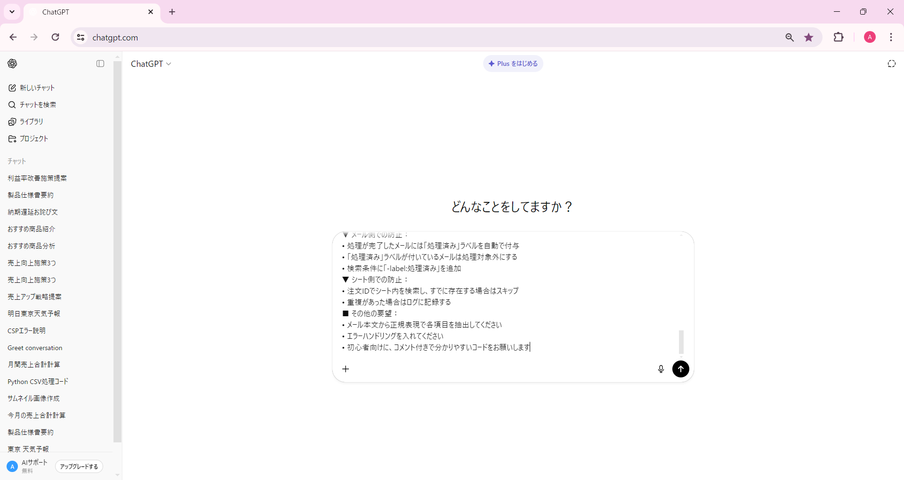

💬 ChatGPTでコードを生成
実践編① - 注文メール → スプレッドシート転記
プロンプトをChatGPTに送信してコードを生成しましょう
前のステップでプロンプトの準備ができたら、次はChatGPTを開いてプロンプトを送信します。 ChatGPTが自動的にGASのコードを生成してくれますので、その手順を確認していきましょう。
📝 このステップで行うこと
ChatGPTにアクセスする
作成したプロンプトを貼り付けて送信する
コードが生成されるのを待つ
生成されたコードを確認する
🌐 ステップ1: ChatGPTにアクセスする
まず、ChatGPTのウェブサイトにアクセスします。 Googleアカウントでログインできますので、初めての方でも簡単に始められます。
📌 ChatGPTへのアクセス方法
ブラウザで https://chatgpt.com にアクセス
右上の「ログイン」または「Sign up」をクリック
Googleアカウントでログイン、または新規登録
チャット画面が表示されたら準備完了です！
💡 無料版でOK
ChatGPTは無料版（ChatGPT 3.5）でも十分に使えます。 今回のようなコード生成であれば、無料版で問題なく実践できますので、安心してお使いください。
📤 ステップ2: プロンプトを貼り付けて送信
ChatGPTが開いたら、前のステップで作成したプロンプトを入力欄に貼り付けて送信します。
📝 送信手順
プロンプトをコピー
前のステップで作成した完全なプロンプトをコピーします。 ワークシートの5ステップがすべて含まれているか確認しましょう。
ChatGPTの入力欄に貼り付け
画面下部の「Message ChatGPT...」という入力欄にプロンプトを貼り付けます。 長いプロンプトでも問題ありません。
送信ボタンをクリック
入力欄の右側にある送信ボタン（↑マーク）をクリックします。 または、Shift + Enterで改行、Enterで送信できます。
💻 ChatGPTの操作画面

クリックすると拡大表示されます
⏳ ステップ3: コードが生成されるのを待つ
プロンプトを送信すると、ChatGPTがコードの生成を開始します。 通常、数秒から数十秒でGASのコードが表示されます。
🎯 生成されるコードの内容
ChatGPTは、プロンプトに基づいて以下のような機能を持つGASコードを生成します：
GmailApp.search() - Gmailからメールを検索
SpreadsheetApp.getActiveSheet() - スプレッドシートを取得
sheet.getRange().setValue() - データを転記
重複チェックのロジック、エラーハンドリングなど
⚠️ 注意点
生成されたコードは、そのまま完璧に動くとは限りません。 以下の点を確認してください：
- スプレッドシートのシート名が正しいか
- 検索キーワードが意図通りか
- 列の配置が正しいか
もしエラーが出たり、期待通りに動かない場合は、 エラーメッセージをChatGPTに送って修正を依頼しましょう。 生成AIは対話を重ねることで、より精度の高いコードを作ってくれます。
✅ コードが生成されましたか？
ChatGPTがコードを生成してくれたら、次はそのコードをGASエディタに貼り付けて実行していきます。
いよいよ自動化ツールが動き出します！